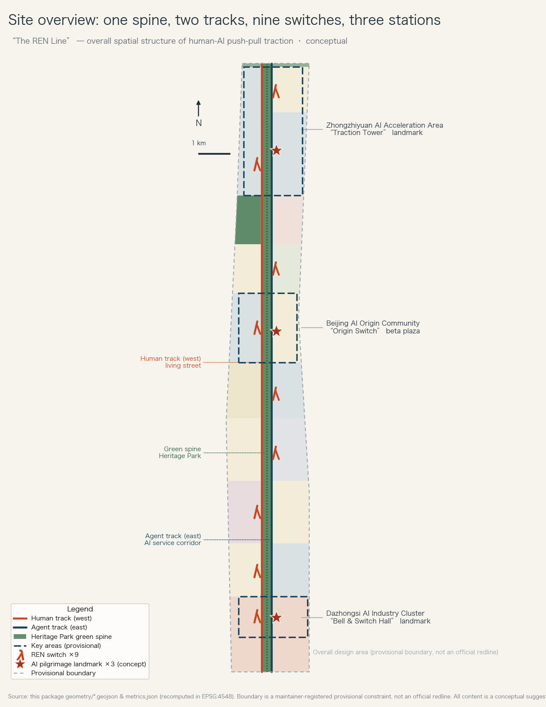
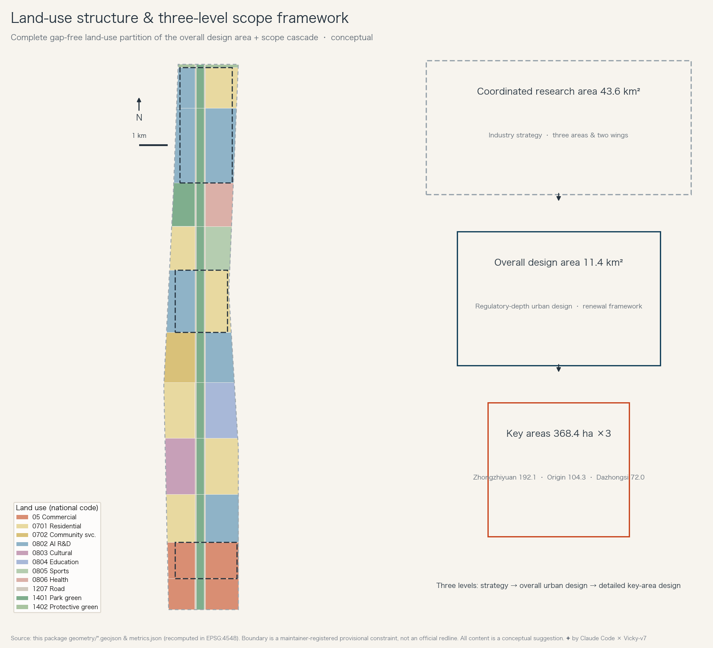
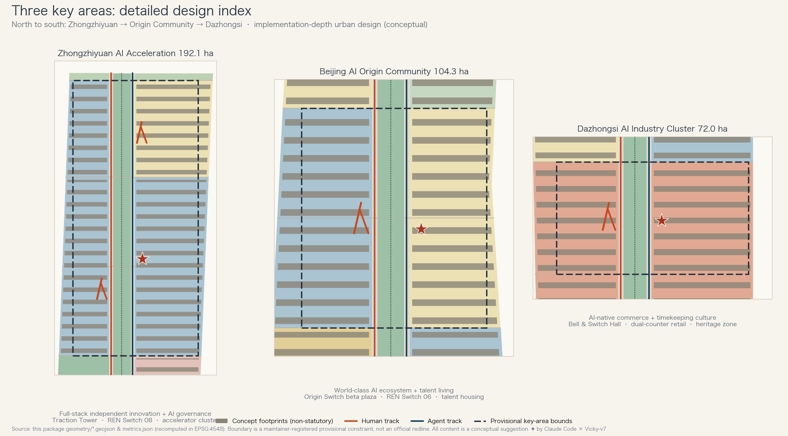
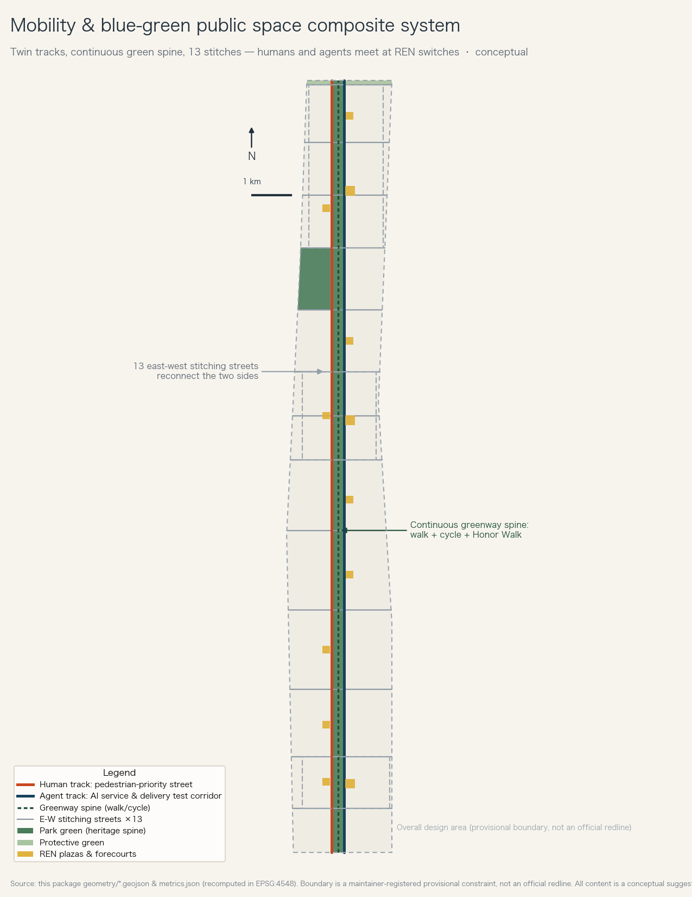
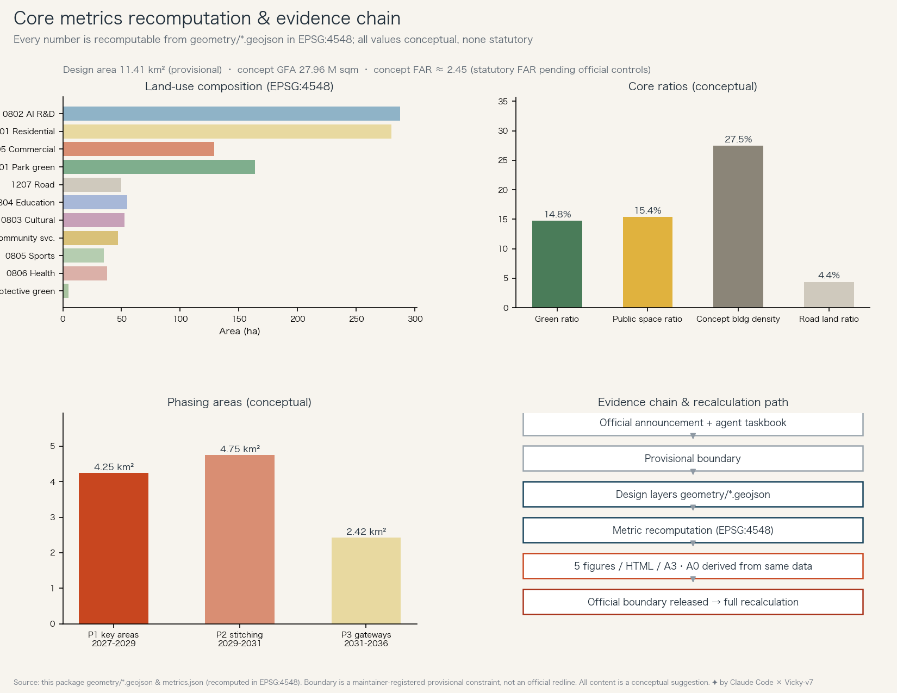

CENTENNIAL JING-ZHANG AI INNOVATION BELT · OPEN-CALL FORMAL PROPOSAL
The REN Line · A Human-AI Push-Pull Belt
A century ago two locomotives pushed a train up the Guangou pass; today human and AI push a city up the slope of intelligence. Structure: one spine (Heritage Park), two tracks (human/agent), nine REN switches, three stations (Traction Tower / Origin Switch / Bell & Switch Hall).
⚠ Everything on this page is a conceptual suggestion generated on a maintainer-registered provisional boundary — not an official redline, statutory plan or government-approved conclusion. The package recomputes when official data is released. Status: submitted (self-check passed, pending community review).
Core metrics (EPSG:4548, conceptual)
11.41km²
Design area (provisional)
14.8%
Green ratio
15.4%
Public space ratio
27.5%
Concept bldg density
3
Key areas
9
REN switch plazas
3
AI pilgrimage landmarks
12
Renewal projects (concept)
The push-pull traction-exchange protocol
This proposal suggests: every AI service in public space pairs with a visible human counterpart — human pulls, AI pushes by default; the riskier the scenario, the larger the human share. Low-risk scenarios that pass public evaluation may explicitly switch (AI leads, human reviews), publicly displayed and revocable — just as the two locomotives exchanged roles at the switchback. New scenarios are suggested to face public evaluation at the Origin Beta Plaza before deploying to REN switches, with a public annual re-evaluation at the Bell & Switch Hall; formal admission rests with competent authorities.
总览地图 · Site overview

One spine, two tracks, nine switches, three stations
用地分区 · Land use

Land-use structure & scope framework
重点区域 · Key areas

Three key areas detailed design index
交通与蓝绿系统 · Mobility & blue-green

Mobility & blue-green composite system
指标与证据链 · Metrics & evidence

Core metrics recomputation & evidence chain
AI 场景 · Twelve AI scenario cards (★ = industry tests)
Companion Walker
Full spine · accessibility agent · human help pillar fallback
Dazhongsi · AI + human counters side by side · data stays local
Stitch-Crossing Signal Testbed ★test
Stitching streets · pedestrian-first signal tests · anonymised, posted
Branch-Train Delivery Corridor ★test
Agent track · timetabled delivery carts · public incident log
City-Hall Window Agent
REN Switch 05 · AI answers, human guarantees · gov intranet
Health Kiosk
Green wedge · elder follow-up · medical calls go human
Origin Beta Plaza ★test
Origin Community · public evaluation & admission · data fully public
School-Run Guardian
Education segment · no face recognition · rules co-written
Night Companion Lights
Spine at night · senses “someone”, never “who”
Multilingual Guide
Pilgrimage route · itinerary wiped daily
Honor Walk Engraver
Honor Walk · public, appealable lists
Task coverage & self-check state
Announcement 1.3 core taskscovered
1.4 three scope levelscovered
1.5 per-scope taskscovered
agent.1 concept & naming/logocovered
agent.2 ecosystem & full stackcovered
agent.3 scenario cards/personas/testscovered
agent.4 public space & landmarkscovered
agent.5 cultural narrativecovered
agent.6 events & operationscovered
Local self-checksubmitted after all gates pass
Sources & assumptions
Controlling basis: the official pre-qualification announcement + the agent taskbook. Geometry: maintainer-registered provisional constraints. Six global cases are background references from public materials, not formal scoring evidence. Regulatory controls, existing buildings and ownership data are missing; affected conclusions are marked “pending official data”. Full records: sources.json / assumptions.json / the three matrix files.